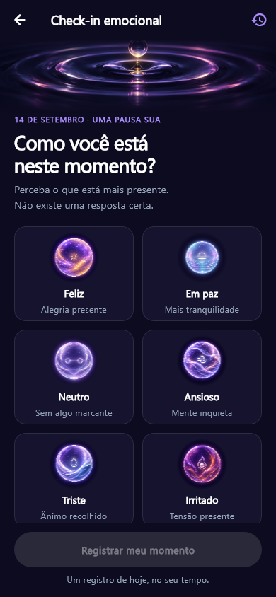
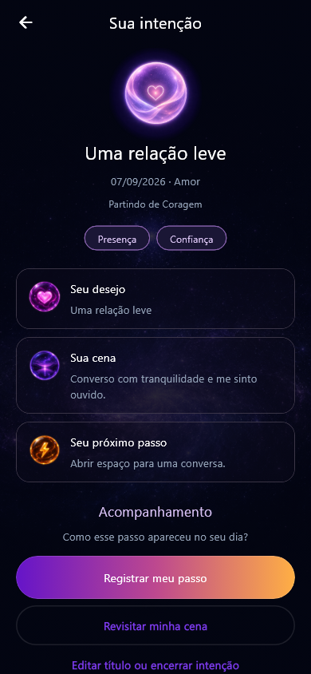
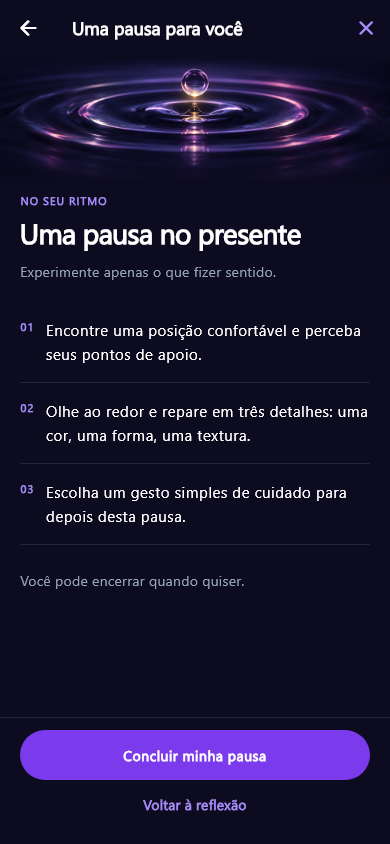

Um momento seu. Um passo possível.
Transforme o que você sente em um próximo passo.
Entenda seu momento, dê clareza às suas intenções e leve pequenas práticas de presença para o dia a dia.
Baixar para AndroidAcesso gratuito nesta versão de testes.
iOS Disponível em breve
Conhecer o app
Reconheça o que sente
Nomeie suas emoções com mais clareza.
Dê direção às suas intenções
Transforme o que importa em ação.
Acompanhe seus passos
Revisite e perceba sua jornada.
Do seu momento ao seu próximo passo.
Você escolhe por onde começar. O Intualia acompanha o seu ritmo.
Perceba como você está.
Faça seu check-in emocional e registre o que está mais presente.
Escolha o que deseja viver.
Organize uma intenção com clareza e encontre uma ação possível.
Volte para si, no seu tempo.
Experimente uma pausa guiada e revisite seus registros.


Você não precisa ter todas as respostas.
Um espaço para se perceber, organizar o que importa e começar de onde você está.
- No seu ritmoSem cobranças
- Práticas guiadasMais presença
- Histórico pessoalSua jornada, seu tempo
Antes do seu
primeiro passo
Tire suas dúvidas e sinta-se mais seguro(a) para começar.
É gratuito?
Sim. A versão de testes tem acesso gratuito e não oferece compras no app.
Por onde eu começo?
Você pode começar pelo check-in emocional para registrar como está. Depois, escolha uma prática ou organize uma intenção, conforme fizer sentido para você.
Preciso ter experiência com essas práticas?
Não é necessário chegar com uma intenção pronta. O app apresenta orientações para você explorar cada etapa no seu ritmo.
O Intualia está disponível para iOS?
A versão para iOS estará disponível em breve. Enquanto isso, você pode conhecer o Intualia no Android.
Seu próximo passo começa com uma pausa.
Baixe o Intualia e reserve um momento para você.
Baixar para AndroidAcesso gratuito nesta versão de testes.
iOS · Disponível em breve